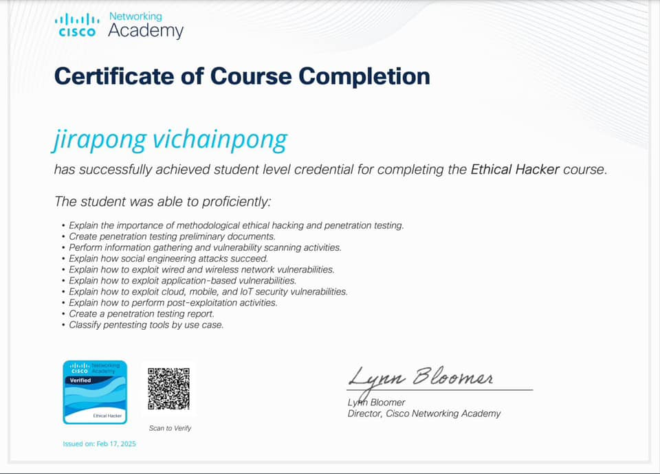
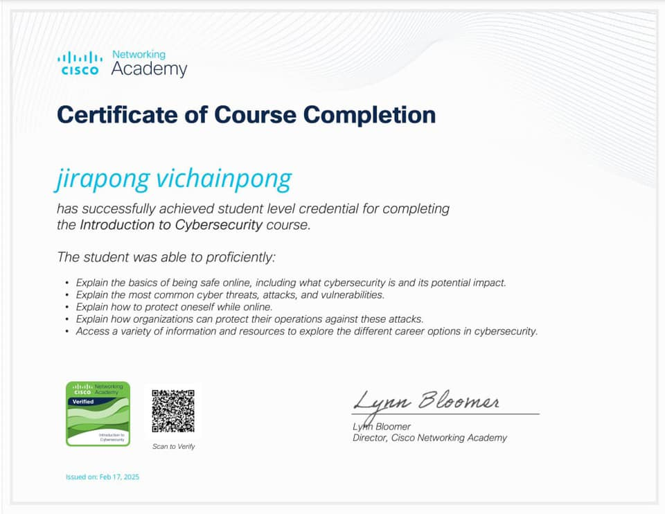

เกี่ยวกับฉัน (Profile)
ผมเป็นนักศึกษาที่หลงใหลในการออกแบบพื้นฐาน มีทักษะการพัฒนาเว็บไซต์ การออกแบบ UI และการวิเคราะห์ข้อมูล มุ่งมั่นเรียนรู้เทคโนโลยีใหม่ ๆ เพื่อพัฒนาตนเองและองค์กร.
ทักษะ (Skills)
Programming
PHP
HTML / CSS
JavaScript
SQL
Python (พื้นฐาน)
Tools
VS Code
Figma
Microsoft Office
GitHub / Git
Soft Skills
Teamwork
Problem Solving
Communication
Adaptability
Time Management
ผลงาน (Projects)
การศึกษา (Education)
จบการศึกษามัธยมศึกษาปีที่ 6 ที่โรงเรียนห้วยเม็กวิทยาคม (2566)
ปัจจุบันศึกษาอยู่ชั้นปีที่ 3 คณะวิทยาศาสตร์ สาขาเทคโนโลยีสารสนเทศ มหาวิทยาลัยราชภัฏอุดรธานี (2566–ปัจจุบัน)
กิจกรรมและผลงานอื่นๆ (Activities & Achievements)

อบรมหลักสูตร Ethical Hacker

อบรมหลักสูตร Introduction to Cybersecurity

อบรมการใช้ AI ให้กับน้องๆนักเรียน
ติดต่อ (Contact)
- Email: 66040233127@udru.ac.th
- GitHub: https://github.com/tontk14
- fackbook: https://www.facebook.com/jirapong.vichianpong/
- ที่อยู่: 234 หมู่ 12 ต.สามพร้าว อ.เมือง จ.อุดรธานี 46170